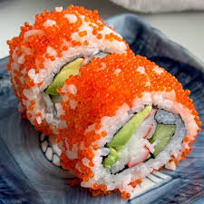
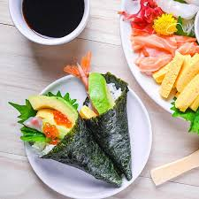
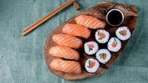

Nigiri Sushi
- Sushi rice
- Fresh fish slices (salmon, tuna, etc.)
- Wasabi
Shape rice into small ovals, spread a little wasabi, and top with a slice of fresh fish. Serve with soy sauce and ginger.

Maki Sushi
- Sushi rice
- Nori sheets
- Fillings (cucumber, fish, avocado)
Place rice on nori, add fillings, and roll tightly using a bamboo mat. Slice into bite-sized rolls.

California Roll
- Sushi rice
- Crab sticks
- Avocado & cucumber
- Nori sheets
Spread rice on nori, add crab, avocado, and cucumber. Roll inside-out and coat with sesame seeds.

Temaki (Hand Roll)
- Nori sheets
- Sushi rice
- Fish or veggies
Place rice and fillings on nori, roll into a cone shape by hand, and enjoy immediately.

Sashimi
- Fresh raw fish (salmon, tuna, etc.)
- Soy sauce
- Wasabi
Simply slice fresh fish into thin pieces and serve raw with soy sauce and wasabi. Light, clean, and healthy!